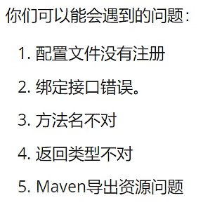
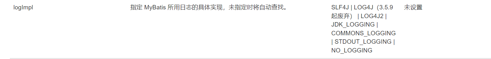
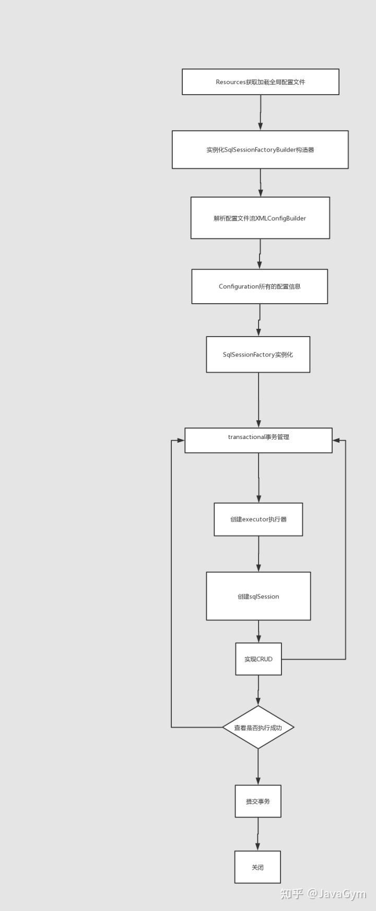
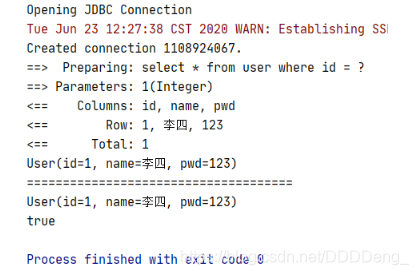

1.Mybatis SSM框架：都是有配置文件的 最好去看官网
MyBatis 是一款优秀的持久层框架
支持自定义 SQL、存储过程以及高级映射
MyBatis 免除了几乎所有的 JDBC 代码以及设置参数和获取结果集
MyBatis 可以通过简单的 XML 或注解来配置和映射原始类型、接口和 Java POJO（Plain Old Java Objects，普通老式 Java 对象）为数据库中的记录。
如何获得Mybati：
持久化
数据持久化就是将程序的数据在持久状态和瞬时状态转化的过程
内存：断电即失
数据库(JDBC)、io流文件持久化保存
持久层
第一个Mybatis程序 搭建环境
搭建数据库环境
1 2 3 4 5 6 7 8 9 10 11 12 13 create database `user_base`;use `user_base`; create table `user `(`id` int (4 ) not null comment '用户编号' , `username` varchar (5 ) not null comment '用户名' , `password` varchar (5 ) not null comment '密码' , primary key(`id`) )engine= innodb default charset= utf8; alter table `user ` modify `id` int (4 ) auto_increment; insert into `user `(`username`,`password`) values ('杨叶' ,'12345' ),('黄叶' ,'12345' );
搭建Maven项目
删除Src目录
导入依赖
1 2 3 4 5 6 7 8 9 10 11 12 13 14 15 16 17 18 19 20 21 <dependencies > <dependency > <groupId > mysql</groupId > <artifactId > mysql-connector-java</artifactId > <version > 8.0.28</version > </dependency > <dependency > <groupId > org.mybatis</groupId > <artifactId > mybatis</artifactId > <version > 3.5.10</version > </dependency > <dependency > <groupId > junit</groupId > <artifactId > junit</artifactId > <version > 4.12</version > <scope > test</scope > </dependency > </dependencies >
创键子模块
1 2 3 4 5 6 7 8 9 10 11 12 13 14 15 16 17 18 19 20 <?xml version="1.0" encoding="UTF-8" ?> <!DOCTYPE configuration PUBLIC "-//mybatis.org//DTD Config 3.0//EN" "http://mybatis.org/dtd/mybatis-3-config.dtd" > <configuration > <environments default ="development" > <environment id ="development" > <transactionManager type ="JDBC" /> <dataSource type ="POOLED" > <property name ="driver" value ="com.mysql.cj.jdbc.Driver" /> <property name ="url" value ="jdbc:mysql://localhost:3306/user_base?useSSL=true& useUnicode=true& characterEncoding=utf-8" /> <property name ="username" value ="root" /> <property name ="password" value ="123456" /> </dataSource > </environment > </environments > <mappers > <mapper resource ="org/mybatis/example/BlogMapper.xml" /> </mappers > </configuration >
编写mybatis工具类
1 2 3 4 5 6 7 8 9 10 11 12 13 14 15 16 17 18 19 public class sqlSessionFactoryUtils { private static SqlSessionFactory sqlSessionFactory; static { try { String resource="mybatis-config.xml" ; InputStream in= Resources.getResourceAsStream(resource); sqlSessionFactory=new SqlSessionFactoryBuilder ().build(in); } catch (IOException e) { e.printStackTrace(); } } public static SqlSession getSqlSessionFactory () { return sqlSessionFactory.openSession(); } }
实体类
1 2 3 4 5 6 7 8 9 10 11 12 13 14 15 16 17 18 19 20 21 22 23 24 25 26 27 28 29 30 31 32 33 34 35 36 37 38 39 40 41 42 43 44 45 46 47 package com.huang.pojo;public class user { private String id; private String username; private String password; public user () { } public user (String id, String username, String password) { this .id = id; this .username = username; this .password = password; } public String getId () { return id; } public void setId (String id) { this .id = id; } public String getUsername () { return username; } public void setUsername (String username) { this .username = username; } public String getPassword () { return password; } public void setPassword (String password) { this .password = password; } @Override public String toString () { return "user{" + "id='" + id + '\'' + ", username='" + username + '\'' + ", password='" + password + '\'' + '}' ; } }
1 2 3 4 5 6 7 8 9 10 package com.huang.dao;import com.huang.pojo.user;import java.util.List;public interface userMapper { List<user> getUsers () ; }
1 2 3 4 5 6 7 8 9 10 <?xml version="1.0" encoding="UTF-8" ?> <!DOCTYPE mapper PUBLIC "-//mybatis.org//DTD Mapper 3.0//EN" "http://mybatis.org/dtd/mybatis-3-mapper.dtd" > <mapper namespace ="com.huang.dao.userMapper" > <select id ="getUsers" resultType ="com.huang.pojo.user" > select * from `user` </select > </mapper >
1 2 3 4 5 6 7 8 9 10 11 12 13 14 15 16 17 18 19 20 21 22 package com.huang.dao;import com.huang.pojo.user;import com.huang.util.sqlSessionFactoryUtils;import org.apache.ibatis.session.SqlSession;import org.junit.Test;import java.util.List;public class dao { @Test public void test () { SqlSession sqlSession= sqlSessionFactoryUtils.getSqlSession(); userMapper mapper = sqlSession.getMapper(userMapper.class); List<user> users = mapper.getUsers(); for (user user : users) { System.out.println(user); } } }
注意点：核心配置文件中注册mapper需要进行注册才能进行绑定
1 2 3 <mappers > <mapper resource ="com/huang/dao/userMapper.xml" /> </mappers >
1 2 3 4 5 6 7 8 9 10 11 12 13 14 15 16 17 18 19 20 21 22 23 package com.huang.dao;import com.huang.pojo.user;import com.huang.util.sqlSessionFactoryUtils;import org.apache.ibatis.session.SqlSession;import org.junit.Test;import java.util.List;public class dao { @Test public void test () { SqlSession sqlSession= sqlSessionFactoryUtils.getSqlSession(); userMapper mapper = sqlSession.getMapper(userMapper.class); List<user> users = mapper.getUsers(); for (user user : users) { System.out.println(user); } } sqlSession.close(); }
1 2 3 4 5 6 7 8 9 10 11 12 13 14 15 16 17 18 19 20 <build > <resources > <resource > <directory > src/main/resources</directory > <includes > <include > **/*.properties</include > <include > **/*.xml</include > </includes > </resource > <resource > <directory > src/main/java</directory > <includes > <include > **/*.properties</include > <include > **/*.xml</include > </includes > <filtering > true</filtering > </resource > </resources > </build >

CRUD
namespace中的包名要和Mapper接口的包名一致
增删改之后需要提交事务，sqlSession.commit()
id:namespace空间中对应的方法名
resultType: SQL执行后返回的结果
parameterType:参数类型
1 2 3 4 5 6 7 8 user getUser (@param("id") int id) ; int insertUser (user User) ;int UpdateUser (user User) ;int deleteUser (@param int id) ;
1 2 3 4 5 6 7 8 9 10 11 12 13 14 15 16 <select id ="getUser" resultType ="com.huang.pojo.user" parameterType ="int" > select * from user where id=#{id} </select > <insert id ="insertUser" parameterType ="com.huang.pojo.user" > insert into user value(#{id},#{username},#{password}) </insert > <update id ="UpdateUser" parameterType ="com.huang.pojo.user" > update `user` set `username`=#{username},`password`=#{password} where `id`=#{id} </update > <delete id ="deleteUser" parameterType ="com.huang.pojo.user" > delete from `user` where `id`=#{id} </delete >
1 2 3 4 5 6 7 8 9 10 11 12 13 14 15 16 17 18 19 20 21 22 23 24 25 26 27 28 29 30 31 32 33 34 35 36 37 @Test public void getUser () { SqlSession sqlSession = mybatisUtils.getSqlSession(); userMapper mapper = sqlSession.getMapper(userMapper.class); user user = mapper.getUser(1 ); System.out.println(user); sqlSession.close(); } @Test public void insertUser () { SqlSession sqlSession = mybatisUtils.getSqlSession(); userMapper mapper = sqlSession.getMapper(userMapper.class); mapper.insertUser(new user (9 , "黄" , "1" )); sqlSession.commit(); sqlSession.close(); } @Test public void UpdateUser () { SqlSession sqlSession=mybatisUtils.getSqlSession(); userMapper mapper = sqlSession.getMapper(userMapper.class); mapper.UpdateUser(new user (2 ,"杨邦艳" ,"123" )); sqlSession.commit(); sqlSession.close(); } @Test public void deleteUser () { SqlSession sqlSession=mybatisUtils.getSqlSession(); userMapper mapper = sqlSession.getMapper(userMapper.class); mapper.deleteUser(2 ); sqlSession.commit(); sqlSession.close(); }
万能的map
如果实体类，数据库中表的字段或参数过多，我们应该考虑使用Map作为参数
1 2 int insertUser2 (Map map) ;
1 2 3 4 <insert id ="insertUser2" parameterType ="com.huang.pojo.user" > insert into `user`(`username`,`password`) value (#{name},#{pwd}) </insert >
1 2 3 4 5 6 7 8 9 10 11 12 13 14 @Test public void insertUser2 () { SqlSession sqlSession = mybatisUtils.getSqlSession(); userMapper mapper = sqlSession.getMapper(userMapper.class); Map<String,Object> map=new HashMap <>(); map.put("name" ,"张三" ); map.put("pwd" ,"11111" ); mapper.insertUser2(map); sqlSession.commit(); sqlSession.close(); }
Map传递参数，直接在sql中取出Key即可
对象传递参数，直接在sql中取对象属性即可
只有一个基本类型参数的情况下，可以直接在SQL中取
总结：多个参数用Map或者注解
模糊查询
在SQL语句中拼接完成
1 2 3 <select id ="getUserList2" parameterType ="String" resultType ="com.huang.pojo.user" > select * from user where username like "%"#{value}"%" </select >
在java执行时候传入通配符%%
1 List<user> userList2 = mapper.getUserList2("张%" );
2.配置解析 1、核心配置文件
mybatis-config.xml
[properties（属性）]
[settings（设置）]
[typeAliases（类型别名）]
[typeHandlers（类型处理器）]
[objectFactory（对象工厂）]
[plugins（插件）]
environments（环境配置）
environment（环境变量）
transactionManager（事务管理器）
dataSource（数据源）
[databaseIdProvider（数据库厂商标识）]
[mappers（映射器）]
2、环境配置(environments) Mybatis 可以配置成适应多种环境
不过要记住：尽管可以配置多个环境，但每个SqlSessionFactory实例只能选择一种环境
学会使用配置多套运行环境！
Mybatis事务管理器有两种：JDBC和MANAGED。默认的事务管理器是：JDBC 默认的连接池：POOLED
3、属性(properties) 编写一个配置文件
db.properties
1 2 3 4 driver =com.mysql.cj.jdbc.Driver url =jdbc:mysql://localhost:3306/user_base?useSSL=true&useUnicode=true&charcterEncoding=utf-8 username =root password =123456
在核心配置文件mybatis-config.xml放入
1 2 3 4 <properties resource ="db.properties" > <property name ="username" value ="root" /> <property name ="password" value ="123456" /> </properties >
可以直接引入外部文件
可以在其中增加一些属性字段
如果两个文件有同一字段，优先使用外部配置文件的
4、类型别名(typeAliases)
类型别名可为 Java 类型设置一个缩写名字
仅用于 XML 配置，意在降低冗余的全限定类名书写
1 2 3 <typeAliases > <typeAlias type ="com.huang.pojo.user" alias ="user" /> </typeAliases >
可以通过扫描POJO的实体类包进行别名设置，别名为POJO实体类名的首字母小写
1 2 3 <typeAliases > <package name ="com.huang.pojo" /> </typeAliases >
在实体类比较少的时候使用第一种指定类型别名的设定方法
如果实体类比较多的时候用第二种包扫描的类型别名设定方法
第一张可以用户任意设置别名，第二种不行，但是可以通过注解进行修改
5、设置(settings) 所有mybatis-config的settings配置标签的属性：mybatis – MyBatis 3 | 配置
6、映射器(mappers) MapperRegistry:注册绑定我们的Mapper文件:
方式一：通过resource路径绑定
1 2 3 <mappers > <mapper resource ="com/huang/dao/userMapper.xml" /> </mappers >
方式二：通过Mapper文件所在类名绑定
1 2 3 <mappers > <mapper class ="com.huang.dao.UserMapper" /> </mappers >
方式三：通过包扫描绑定
1 2 3 <mappers > <package name ="com.huang.dao" /> </mappers >
方法二、三注意点：
接口和他的Mapper配置文件必须同名
接口和他的Mapper配置文件必须在同一包下
使用resource进行xml文件注册时可以使用通配符*Mapper.xml注册
7、生命周期 生命周期类别、作用域是至关重要的，因为错误的使用会导致非常严重的并发问题 。
SqlSessionFactoryBuilder
一旦创建了 SqlSessionFactory，就不再需要它了
SqlSessionFactoryBuilder 实例的最佳作用域是方法作用域（也就是局部方法变量）
SqlSessionFactory
SqlSession
每一个线程都有自己的SqlSession实例，它不是线程安全的所以无法共享
最佳的作用域是请求或方法作用域
等同于连接池的一个请求
使用完成必须关闭SqlSession
3.ResultMap resultMap：结果集映射
1 2 3 4 5 6 7 8 9 <resultMap id ="map" type ="com.huang.pojo.User" > <result property ="pwd" column ="password" /> <result property ="name" column ="username" /> </resultMap > <select id ="selectUser" resultMap ="map " parameterType ="_int" > select * from user.user where `id`=#{id} </select >
resultMap元素是Mybatis中最强大的元素
resultMap的设计思想是，对于简单的语句根本不需要配置显示的结果映射，而对于复杂一点的语句只需要描述他们的关系就行了
resultMap最优秀的地方在于，虽然你对它相当了解，但是根本就不需要显示地用他们
4.日志 数据库异常需要排错，日志 是最好的助手

SLF4J
LOG4J（3.5.9 起废弃）
LOG4J2
JDK_LOGGING
COMMONS_LOGGING
STDOUT_LOGGING 标准日志输出
1 2 3 <settings > <setting name ="logImpl" value ="STDOUT_LOGGING" /> </settings >
5.分页 1、Limit分页 SQL层次实现分页
接口
1 2 List<User> getUserListByLimit (Map<String,Integer> map) ;
Mapper.xml
1 2 3 <select id ="getUserListByLimit" resultMap ="map" parameterType ="map" > select from `user` limit #{StartIndex},#{PageSize} </select >
测试
1 2 3 4 5 6 7 8 9 10 11 12 13 14 @Test public void testGetUserListByLimit () { SqlSession sqlSession = SqlSessionUtils.getSqlSession(); UserMapper mapper = sqlSession.getMapper(UserMapper.class); Map<String,Integer> map=new HashMap <>(); map.put("StartIndex" ,0 ); map.put("PageSize" ,3 ); List<User> users = mapper.getUserListByLimit(map); for (User user : users) { System.out.println(user); } sqlSession.close(); }
2、RowBounds分页 JAVA代码层实现分页
接口
1 2 List<User>getUserListByRowBounds();
Mapper.xml
1 2 3 <select id ="getUserListByRowBounds" resultMap ="userMap" > select * from `user` </select >
测试
1 2 3 4 5 6 7 8 9 10 11 @Test public void testGetUserListByRowBounds () { SqlSession sqlSession = SqlSessionUtils.getSqlSession(); RowBounds rowBounds = new RowBounds (0 ,3 ); List<User> User = sqlSession.selectList("com.huang.Dao.UserMapper.getUserListByRowBounds" ,null ,rowBounds); for (User user : User) { System.out.println(user); } sqlSession.close(); }
6.注解开发CRUD 面向接口编程
大家之前都学过面向对象编程，也学习过接口，但在真正的开发中，很多时候我们会选择面向接口编程；
根本原因：解耦；可拓展；提高复用；分层开发中，上层不用具体的实现，大家都遵守共同的标准，使得开发变得容易，规范性更好；
在一个面向对象的系统中，系统的各种功能是由许许多多的不同对象协作完成的。在这种情况下，各个对象内部是如何实现自己的，对系统设计人员来讲就不那么重要了；
各个对象之间的协作关系则成为系统设计的关键。小到不同类之间的通信，大到各模块之间的交互，在系统设计之初都是要着重考虑的，这也是系统设计的主要工作内容。面向接口编程就是指按照这种思想来编程。
关于接口的理解 三个面向区别
面向对象是指，我们考虑问题时，以对象为单位，考虑它的属性及方法。
面向过程是指，我们考虑问题时，以一个具体的流程（事务过程)为单位，考虑它的实现。
接口设计与非接口设计是针对复用技术而言的，与面向对象(过程)不是一个问题.更多的体现就是对系统整体的架构。
1、注解在接口上实现
1 2 3 4 public interface MapperUser { @Select("select * from `user`") List<User> getUserList () ; }
2、需要在核心配置文件中绑定接口！
1 2 3 <mappers > <mapper class ="com.huang.dao.MapperUser" /> </mappers >
3、测试
1 2 3 4 5 6 7 8 9 10 11 12 public class Test { @org .junit.Test public void TestGetUserList () { SqlSession sqlSession = SqSessionUtils.getSqlSession(); MapperUser mapper = sqlSession.getMapper(MapperUser.class); List<User> userList = mapper.getUserList(); for (User user : userList) { System.out.println(user); } sqlSession.close(); } }
注解简化开发、底层主要应用反射
本质：反射机制实现
底层：动态代理

方法存在多个参数，所有的参数前面必须加上@param( )注解
7.Lombok 使用步骤：
IDEA中安装lombok的插件
在项目中导入lombok的插件
但IDEA2021版本内置Lombok，不需要额外安装了
1 2 3 4 5 6 7 8 9 10 11 12 13 14 15 16 17 @Data注解：它包含getter、setter、NoArgsConstructor、equals、canEqual、hashCode、toString @getter注解：生成对应的getter方法； @setter注解：生成对应的setter方法； @NoArgsConstructor注解：生成对应的无参构造方法； @AllArgsConstructor注解：对应的有参构造方法； @ToString注解：自动重写对应的toStirng方法； @EqualsAndHashCode注解：自动重写对应的equals方法和hashCode方法； @Slf4j：在需要打印日志的类中使用，当项目中使用了slf4j打印日志框架时使用该注解，会简化日志的打印流程，只需调用info方法即可； @Log4j：在需要打印日志的类中使用，当项目中使用了log4j打印日志框架时使用该注解，会简化日志的打印流程，只需调用info方法即可；
1 2 3 4 5 6 7 <dependency > <groupId > org.projectlombok</groupId > <artifactId > lombok</artifactId > <version > 1.18.24</version > <scope > provided</scope > </dependency >
8.多对一
多个学生，对于一个老师
对于学生这边而言，通过关联进行相联，多个学生 关联一个老师【多对一】
对于老师而言，集合，一个老师有很多学生【一对多】
在resultmap中复杂的属性，我们要单独处理
对象：association
集合：collection
子查询：
1 2 3 4 5 6 7 8 9 10 11 12 13 14 <resultMap id ="student" type ="com.huang.pojo.User" > <result column ="id" property ="id" /> <result column ="name" property ="name" /> <association column ="tid" property ="teacher" javaType ="Teacher" select ="getTeacher" /> </resultMap > <select id ="getStudents" resultMap ="student" > select * from school.`student` </select > <select id ="getTeacher" resultType ="Teacher" > select * from school.`teacher` where id = #{id} </select >
联合查询：
1 2 3 4 5 6 7 8 9 10 11 12 13 <select id ="getStudents2" resultMap ="student" > select s.`id` sid,s.`name` sname,t.`id` tid,t.`name` tname from school.student `s`,school.teacher `t` where s.`tid`=t.`id` </select > <resultMap id ="student" type ="Student" > <result column ="sid" property ="id" /> <result column ="sname" property ="name" /> <association property ="teacher" javaType ="Teacher" > <result column ="tid" property ="id" /> <result column ="tname" property ="name" /> </association > </resultMap >
9.一对多 javaType：指定属性的类型
ofType：集合中的泛型信息
子查询：
1 2 3 4 5 6 7 8 9 10 11 12 13 <mapper namespace ="com.huang.dao.TeacherMapper" > <resultMap id ="Teacher" type ="Teacher" > <result property ="id" column ="id" /> <collection property ="students" column ="id" javaType ="ArrayList" ofType ="Student" select ="getStudent" /> </resultMap > <select id ="getTeacher" resultMap ="Teacher" > select t.id,t.name from teacher t where t.id=#{tid} </select > <select id ="getStudent" resultType ="Student" > select * from student s where id=#{id} </select > </mapper >
联合查询:
1 2 3 4 5 6 7 8 9 10 11 12 13 14 15 16 17 18 <mapper namespace ="com.huang.dao.TeacherMapper" > <resultMap id ="student" type ="Teacher" > <result property ="id" column ="tid" /> <result property ="name" column ="tname" /> <collection property ="students" ofType ="Student" > <result property ="name" column ="sname" /> <result property ="id" column ="sid" /> <result property ="tid" column ="tid" /> </collection > </resultMap > <select id ="getTeacher" resultMap ="student" > select s.id sid,s.name sname,t.id tid,t.name tname from student s,teacher t where s.id=t.id and t.id=#{tid} </select > </mapper >
小结：
关联-association 多对一
集合-collection 一对多
10.动态SQL 动态SQL：指根据不同的条件生成不同的SQL语句
1 2 3 4 5 6 7 <if test ="author !=null" > and author =#{author} </if > <if test ="title !=null" > and title =#{title} </if >
1 2 3 4 5 6 7 8 9 10 11 12 13 14 15 16 17 18 19 20 21 public void test1 () { SqlSession sqlSession = MybatisUtil.getSqlSession(); blogMapper mapper = sqlSession.getMapper(blogMapper.class); HashMap map = new HashMap <>(); map.put("author" ,"杨叶" ); List<Blog> blogByTorA = mapper.getBlogByTorA(map); for (Blog blog : blogByTorA) { System.out.println(blog); } sqlSession.close(); }
choose (when, otherwise)，它有点像 Java 中的 switch 语句
1 2 3 4 5 6 7 8 9 10 11 12 13 14 15 16 <select id ="getBlog2" parameterType ="Map" resultType ="Blog" > select * from mybatis.blog <where > <choose > <when test ="author !=null" > and author =#{author} </when > <when test ="title !=null" > and title =#{title} </when > <otherwise > and views=#{views} </otherwise > </choose > </where > </select >
1 2 3 4 5 6 7 8 9 10 11 12 13 14 public void test2 () { SqlSession sqlSession = MybatisUtil.getSqlSession(); blogMapper mapper = sqlSession.getMapper(blogMapper.class); HashMap map = new HashMap <>(); map.put("views" ,"9999" ); List<Blog> blogByTorA = mapper.getBlog2(map); for (Blog blog : blogByTorA) { System.out.println(blog); } sqlSession.close(); }
trim (where, set) 子句的开头为 “AND” 或 “OR”，where 元素也会将它们去除，set 元素会动态地在行首插入 SET 关键字，并会删掉额外的逗号 , 也可以通过自定义 trim 元素来定制 where 元素的功能。
1 2 3 4 5 6 7 8 9 10 11 12 13 14 15 16 17 18 19 20 21 22 23 24 <update id ="upViews" parameterType ="Map" > update mybatis.blog <set > <if test ="author !=null" > author =#{author}, </if > <if test ="title !=null" > title =#{title}, </if > </set > <where > <if test ="views!=null" > views >=#{views} </if > </where > </update > <trim prefix ="where" prefixOverrides ="and |or" > ... </trim > <trim suffix ="SET" suffixOverrides ="," > ... </trim >
1 2 3 4 5 6 7 8 9 10 11 12 13 public void test3 () { SqlSession sqlSession = MybatisUtil.getSqlSession(); blogMapper mapper = sqlSession.getMapper(blogMapper.class); HashMap map = new HashMap <>(); map.put("title" ,"Mybatis如此简单1" ); map.put("author" ,"杨叶2" ); map.put("views" ,"10000" ); int i = mapper.upViews(map); System.out.println(i); sqlSession.commit(); sqlSession.close(); }
foreach其中index 是当前迭代的序号，item 的值是本次迭代获取到的元素。当使用 Map 对象（或者 Map.Entry 对象的集合）时，index 是键，item 是值。
1 2 3 4 5 6 7 8 <select id ="getBlog3" parameterType ="Map" resultType ="Blog" > select * from mybatis.blog <where > <foreach collection ="ids" item ="id" open ="and (" close =")" separator ="or" > id=#{id} </foreach > </where > </select >
sql 用于代码的复用,通过include标签进行调用
1 2 3 4 5 6 7 8 9 10 11 12 13 14 15 16 <sql id ="select-author-title" > <if test ="author !=null" > and author =#{author} </if > <if test ="title !=null" > and title =#{title} </if > </sql > <select id ="getBlogByTorA" parameterType ="Map" resultType ="Blog" > select * from mybatis.blog <where > <include refid ="select-author-title" /> </where > </select >
所谓的动态SQL，本质还是SQL语句，只是我们可以在SQL里面，去执行逻辑代码
11.缓存 主要 读写分离，主从复制
什么是缓存：
存在内存中的临时数据
将用户经常查询的数据放在缓存（内存）中，用户去查询数据就不用从磁盘上（关系型数据库数据文件）查询，而是通过缓存中查询，从而提高查询效率，解决了高并发系统的性能问题。
为什么使用缓存？
减少和数据库的交互次数，减少系统开销，提高系统效率
使用缓存建议
经常查询并且不经常改变的数据 （可以使用缓存）
不经常查询且经常改变的数据（不可以使用缓存）
mybtis缓存
MyBatis包含一个非常强大的查询缓存特性，它可以非常方便的定制和配置缓存，缓存可以极大的提高查询效率。
MyBatis系统中默认定义了两级缓存：一级缓存和二级缓存
默认情况下，只有一级缓存开启（SqlSession级别的缓存，也称为本地缓存）
二级缓存需要手动开启和配置，他是基于namespace级别的缓存。
为了提高可扩展性，MyBatis定义了缓存接口Cache。我们可以通过实现Cache接口来定义二级缓存。
一级缓存
一级缓存也叫本地缓存：SqlSession
与数据库同一次会话期间查询到的数据会放在本地缓存中
以后如果需要获取相同的数据，直接从缓存中拿，没必要再去查询数据库
测试步骤：
开启日志
测试在一个Session中查询两次记录
查看日志输出

缓存失效的情况：
查询不同的东西
增删改操作，可能会改变原来的数据，所以必定会刷新缓存
查询不同的Mapper.xml
手动清理缓存
1 sqlSession.clearCache();
二级缓存
1 2 3 4 5 6 7 8 9 10 11 12 13 14 15 16 17 18 19 20 21 22 23 24 25 26 27 28 29 题目1. 通过userCode获取User 题目2. 增加一个用户 题目3. 通过条件查询用户-userList 题目4. 通过条件查询-用户记录数 题目5. 通过id删除user 题目6. 通过id获取user 题目7. 修改用户信息 题目8. 修改当前用户密码 题目9. 获取角色列表 题目10. 增加一个角色 题目11. 通过id删除role 题目12. 修改角色信息 题目13. 通过id获取role 题目14. 根据roleCode，进行角色编码的唯一性验证 题目15. 增加一个供应商 题目16. 通过条件查询供应商 题目17. 获取供应商列表 题目18. 通过条件查询供应商表记录数 题目19. 通过供应商id删除供应商 题目20. 根据provider id获取供应商 题目21. 修改供应商信息 题目22：根据供应商id，查询订单数量 题目23 .增加一个订单 题目24. 通过条件查询，获取Bill列表 题目25. 通过条件查询订单表记录数 题目26. 通过id删除Bill 题目27. 通过id获取Bill 题目28. 修改订单信息 题目29. 根据供应商id删除订单信息